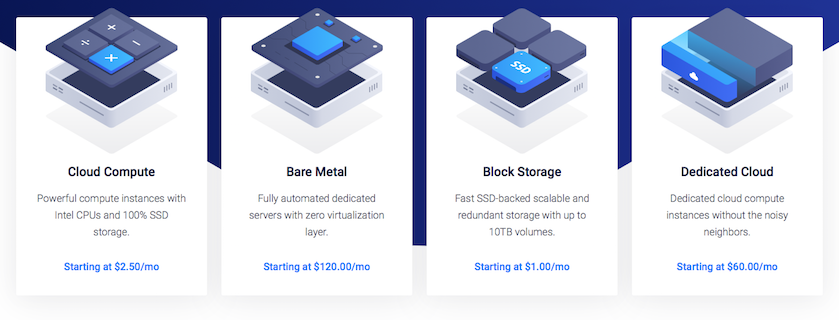
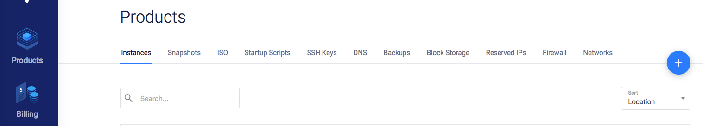
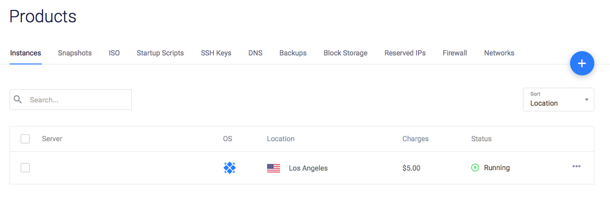
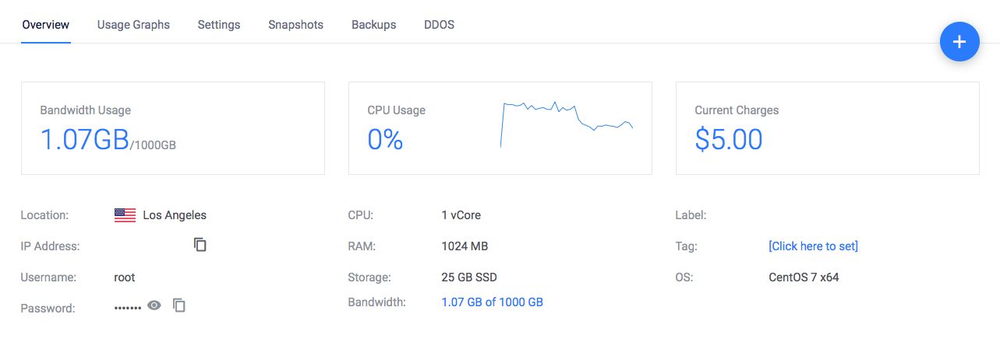

作为软件研发人员，我们对国外优秀技术平台、技术资源是有一定偏好跟需求的。搭梯子是一个非常规操作，这里按下不表。本文主要介绍VPS购买及基础环境配置，后文还有介绍搭建博客的过程。躺了坑也公开说一下，方便后来人。
VPS是什么？
VPS全称 Virtual Private Server。虚拟专用服务器技术，是将一台服务器分隔成多个虚拟专享服务器的服务。每个VPS可配置独立公网IP、操作系统、内存、CPU资源和系统配置的隔离，为用户模拟出”独占”计算资源的体验。简单可以理解VPS是一台拥有公网IP的服务器。
VPS提供商有很多，譬如Vultr、Digital Ocean、Linode等等。本文将介绍的是Vultr，它的费用最低甚至到每月2.5美元（只能IPv6），对于搭建博客及学习是足够的。学习的话，虽然现在使用docker同样方便的，但对于需要公网访问的服务，比如捣鼓点个人项目时，就需要VPS了。当然，也有人拿来学习sock5协议，这不在本文介绍范围内。
购买及部署VPS
Vultr 提供多个地区的节点，按时间计费，并且根据选定的配置有费用上限。性价比较高，服务也比较稳定，在我使用这么长时间以来，暂时还没发现博客无法访问的情况。
创建帐号等流程就不用多说了，访问Vultr注册帐号即可。可以使用我的推荐链接，https://www.vultr.com/?ref=7194342，优惠时时变、可以关注一下官方说明。
利益相关：推荐链接可能给双方带来优惠，如果不需要刻意直接打开 https://www.vultr.com 。
注册完成后，会弹出Billing账单支付页面，其实就是预充值的意思，避免后续部署流程中断、推倒重来较为麻烦。建议先充值最低$10即可。
支付方式目前支持PayPal、Bitcoin、支付宝以及微信支付等。我个人选择是使用PayPal，这个无所谓的，后续也可以修改。选择PayPal主要是自动扣费，免得有时懒或者忘记了~~~

登录之后，选择Products，点击右侧加号（Deploy New Server）。

Choose Server选择Cloud Compute。Server Location就个人喜好了，我选择Los Angeles的。Server Type个人喜好，我选择CentOS。Server Size个人喜好，我选择$5/m的，搭建博客、科学上网都是够的。Server Hostname是管理后台别名的，如果有多台机器实例，方便区分而已。
SSH Keys的步骤需要将你访问终端也就是你电脑上的SSH公钥（一般是.ssh目录下.pub文件，譬如id_rsa.pub）配置上去，可以参考这里。
如果你机器配置了多个SSH的密钥的话，可以单独创建一个公私钥对：
ssh-keygen -f id_rsa_vultr -C “SSH_GIT_ON_MBP”
建议配置一下.ssh目录下的confg文件，譬如
Host vultr
HostName XX.XX.XX.XXX # 注：VPS的IP
User git #请使用实际登录帐户，如root
PreferredAuthentications publickey
IdentityFile ~/.ssh/id_rsa_vultr
IdentitiesOnly yes
AddKeysToAgent yes
之后就可以 ssh git@vultr 来免密登录服务器了。
然后点击Deploy部署，等待部署完毕即可。
登录VPS
在Vultr上选择Products，Instance栏下可以看到刚才创建的实例：

点击进入服务器信息页面：

可以看到页面显示该VPS的IP地址、Username、Password等。
打开终端登录该服务器即可。(若VPS上未配置好SSH免密登录，需要输入上述管理后台记录的密码)
登录之后，可以学习操作的东西就比较多了，，这个看个人兴趣了。
其他
Vultr支持一键备份、恢复，好处是：更换IP！建议全部配置完成后，做一次Snapshot保存一下。
本文作者：Jason
本文链接： http://blog.knpc21.com/ios/vps-vultr-tour/
文章默认使用 CC BY-NC-SA 4.0 协议进行许可，使用时请注意遵守协议。
评论